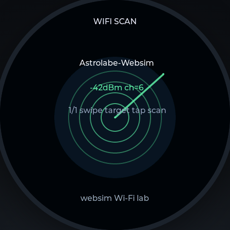
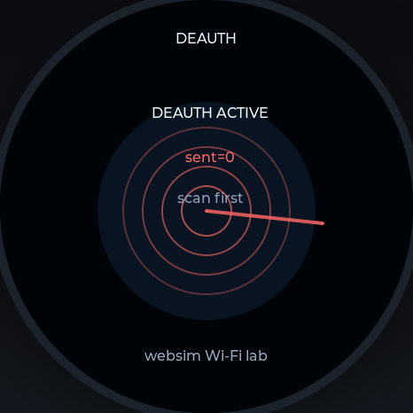
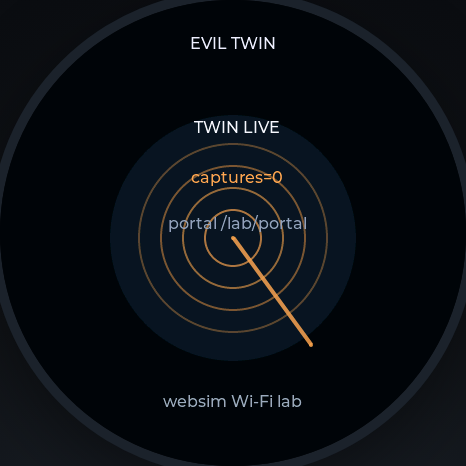
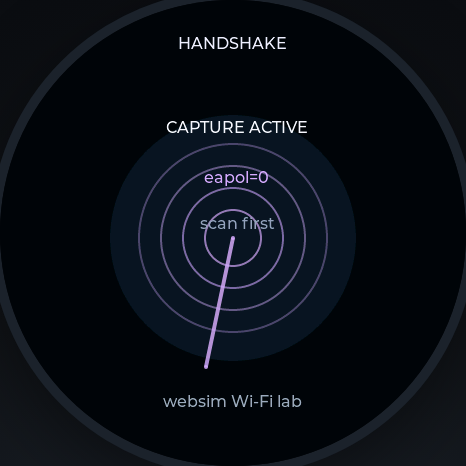
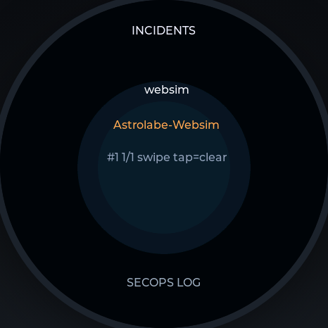
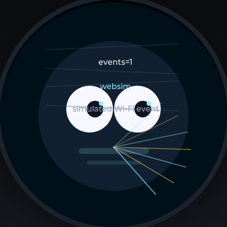
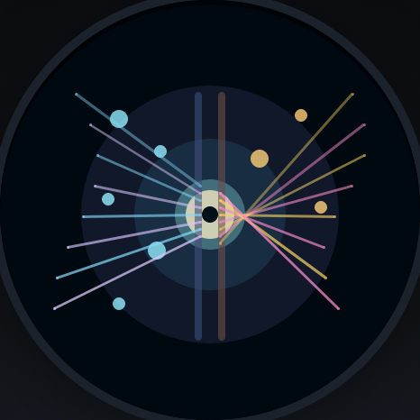

Observe
Scan nearby networks and record what the instrument can actually see.
WIFI SCANAstrolabe 1.75C · integration
A pocket-sized cyber instrument for authorized labs: local observation, evidence-aware workflows, and a quiet control surface that stays useful when the network is not.
Offline-first control · BLE available · local evidence
One instrument, four working surfaces
Cyber keeps the useful parts of a security workflow visible on the round display: what is being observed, what was captured, which boundary applies, and what action is safe to take next.
Scan nearby networks and record what the instrument can actually see.
WIFI SCANSeparate a familiar name from a verified identity before trusting a connection.
EVIL TWIN LABKeep captures and incidents legible, bounded, and tied to an authorized test.
INCIDENTSUse USB screen/HID or the BLE keyboard bridge without giving up local control.
BLE > USB READYChoose the instrument by the question
Every Astrolabe shares the same round module and swipe-first grammar. The variant changes what the instrument keeps close at hand.
| Instrument | Best for | Signature surfaces | Connectivity posture |
|---|---|---|---|
| Cyber1.75C · integration | Authorized security labs and device control | Wi-Fi lab, incidents, Watcher, USB screen/HID, BLE keyboard bridge | Offline-first; Wi-Fi, BLE, USB HID/MSC |
| Pocket1.75 · carry-first | Time, orientation, weather, and daily readiness | Classic, Digital, Radar, Weather, Rocket, Orientation | Local glance; connected when useful |
| LunaSay1.75 · reflection | Lunar, astrological, and spoken reflection | Moon, Astrology, Transits, Synastry, Journal, Conversation | Offline core; optional cloud conversation |
| Ocarina1.75 · breath / music | Breath, tone, tuning, and touch-playable sound | Ocarina, Pitch, Tuning, Spectrum, Chord | Local audio; connected features by choice |
| LuoPan1.75 · compass | Direction, spatial alignment, and geomancy | LuoPan, Level, Radar, Globe, Geomancy | Sensor-led; local orientation first |
Cyber adds controlled lab capability to the family; it does not replace the quieter Pocket, LunaSay, Ocarina, or LuoPan roles.
The Cyber dial
These WebSim captures exercise the current LVGL Cyber surfaces at the instrument's native 466×466 canvas. Each surface is designed for a controlled lab, not casual interference.







A safer operating rhythm
Define the network, device, and time window before opening a lab face.
Prefer the smallest read-only surface that answers the question.
Treat captures, credentials, and logs as sensitive local evidence.
Clear the lab state and return the instrument to its ordinary control surface.
Authorized labs only. Cyber faces can disrupt networks or expose sensitive test evidence. Use them only on systems and traffic you own or have explicit permission to test.
Integration channel · astrolabe-cyber-175
Build from source, or use the signed integration artifact when your device is enrolled for OTA.